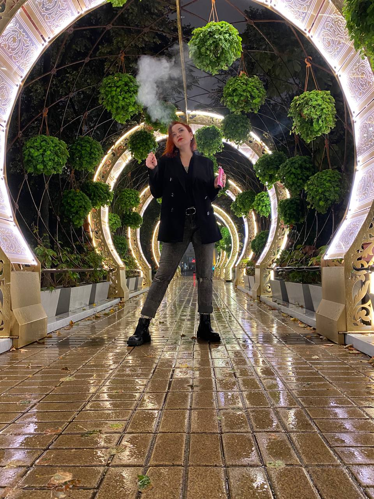
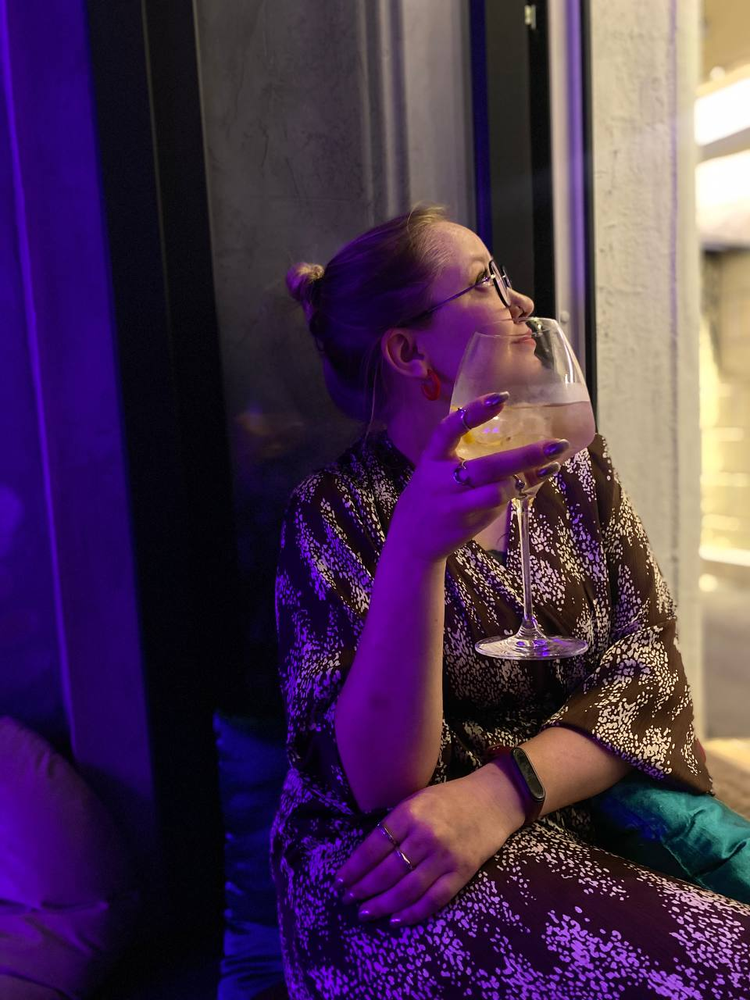
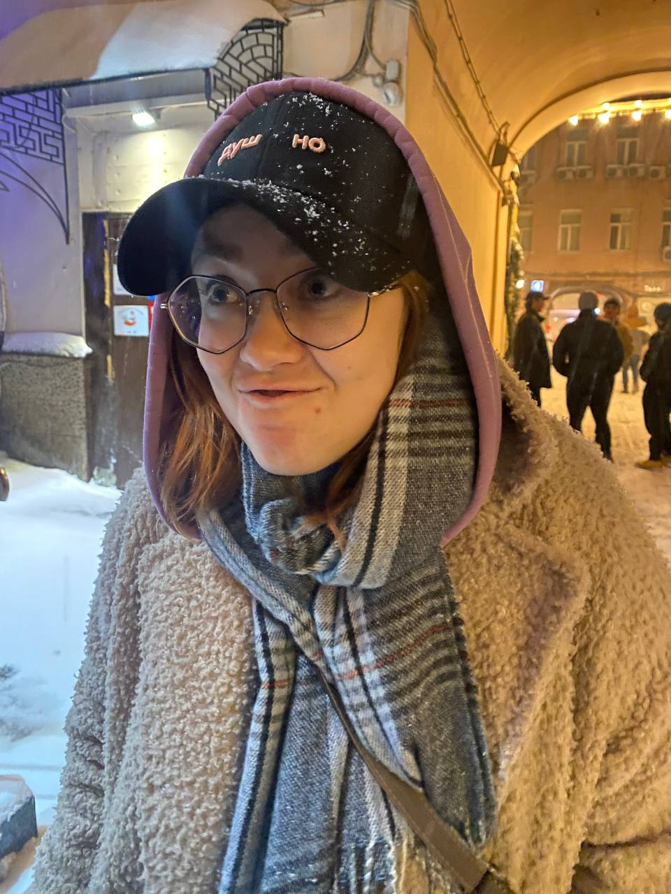
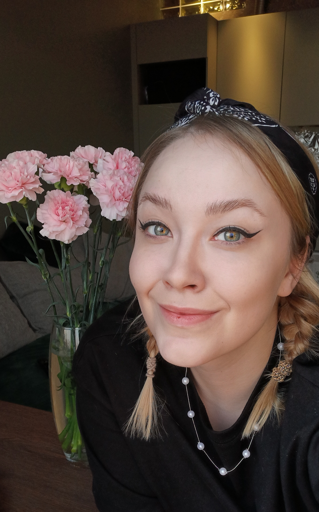

Привет!
Меня зовут Саня и у меня биполярка.
Хочешь узнать что такое жить с биполяркой?
Биполярное аффективное расстройство, или БАР, — психическое заболевание, которое проявляется резкими перепадами настроения: от чрезмерно приподнятого, то есть эпизодов мании, до чрезмерно угнетенного — эпизодов депрессии. От обычных колебаний настроения биполярное расстройство отличается продолжительностью изменений. Если здоровый человек ощущает тоску или внутренний подъем в течение нескольких часов, то у больного БАР эпизоды длятся от нескольких недель до 3—6 месяцев.
На словах это прикольненький диагноз, но в реальности это долбанный ад.
В периоды мании ты влюблен в жизнь, влюблен в себя и людей, но не можешь сосредоточитсья ни на чем одном. Я два раза была замужем, два раза развелась, имела десятки или сотни половых партнеров, я много пила и веселилась, много работала на двух работах, употребляла наркотики, спонтанно переезжала в другие города, бросила универ, взяла собаку из приюта и еще много всего импульсивного.
В периоды депрессии все откатывается назад. Первый брак заканчивается тем, что мне становится скучно. Я начинаю изменять, потом чувствую вину и ненавижу себя. Схожу с ума от вины, а потом еще и от предательства близкого, который незаметно стал чужим, впадаю в адскую апатию, бессилие, появляются деперсонализация и дереализация, а в следствие плохой бесплатной терапии еще и суицид. Собака отдается маме. Второй брак разваливается, потому что не всякий человек выдержит рядом с собой унылое говно. В тот момент я все еще не знаю, что у меня биполярка.
И чем сильнее была эйфория, тем больше ты за нее заплатишь. Психиатры долгое время ставили мне просто депрессию и давали антидепрессанты. Эффект был, я восставала из мертвых, снова жила жизнь, снова брала от нее все, но как только случался сильный стресс, меня опять уводило в депрессию. Я ошибочно думала, что просто перестают действовать антидепрессанты и прибегала к врачу за новым рецептом. И только на третьем круге такого забега, придя снова к психиатру, когда он не смог подобрать мне новые антидепрессант в течение 5 месяцев, заподозрили у меня БАР.
Сейчас я нахожусь в больнице и меня наблюдают врачи. Они пытаются подобрать мне лечение так, чтобы я могла оставаться в балансе и наплаву. Сейчас я уже вижу, как все мое лечение было некорректно до этого момента. Я благодарна всем, кто поддерживает меня в это трудное время. Я надеюсь выйти в ремиссию и начать жить с новой странички.
